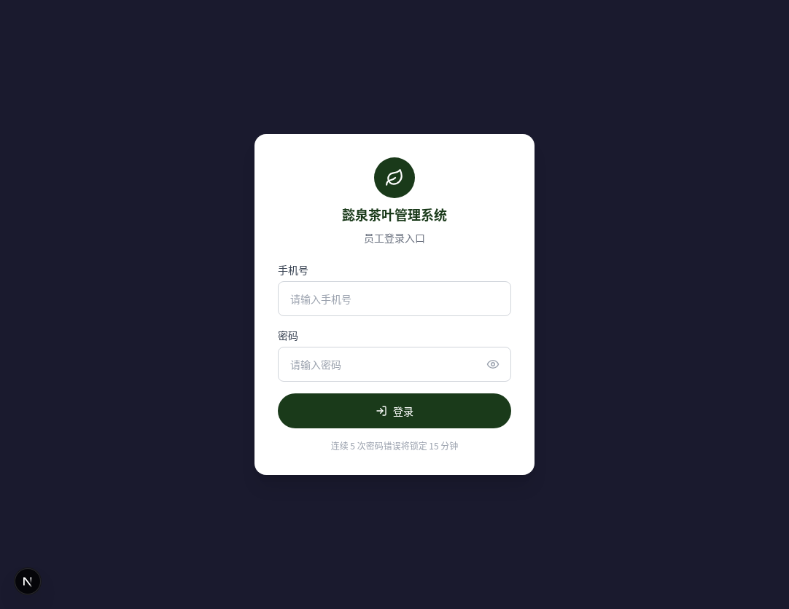
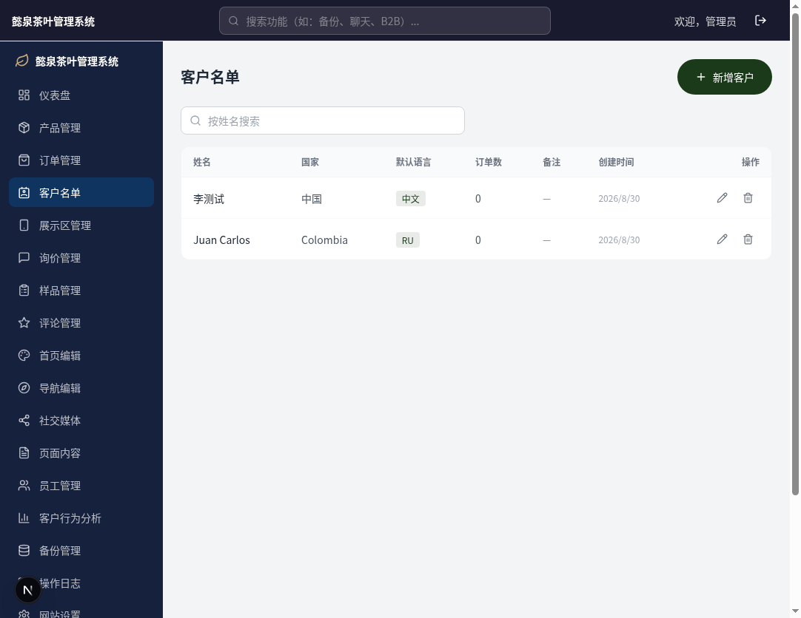
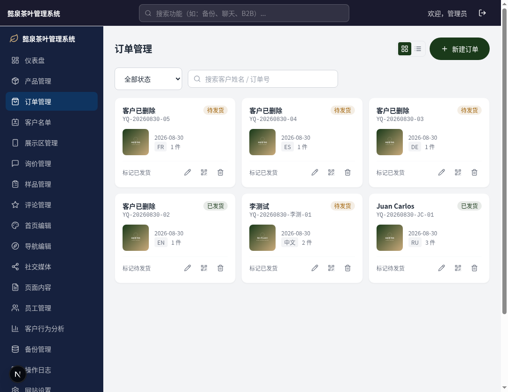
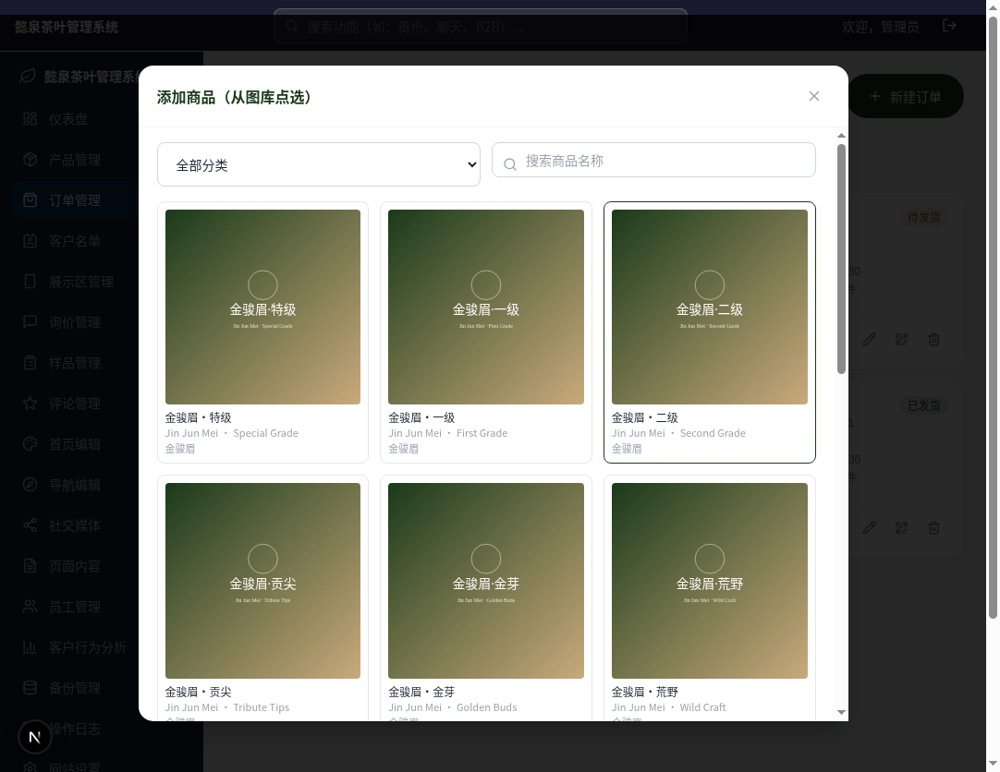
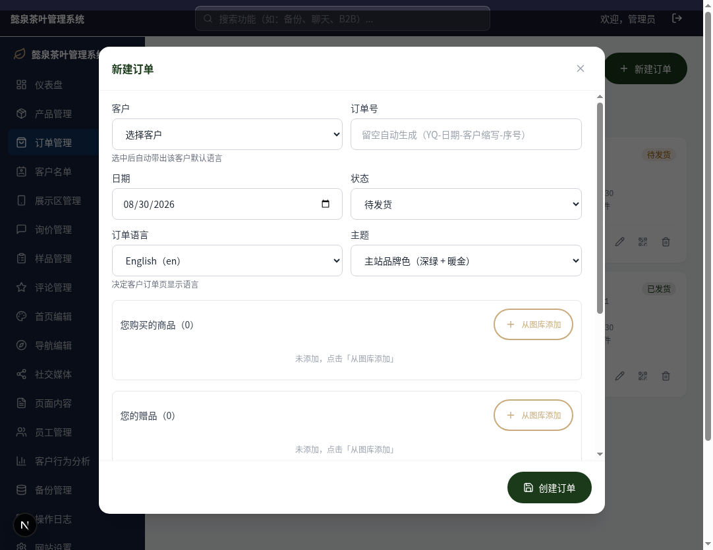
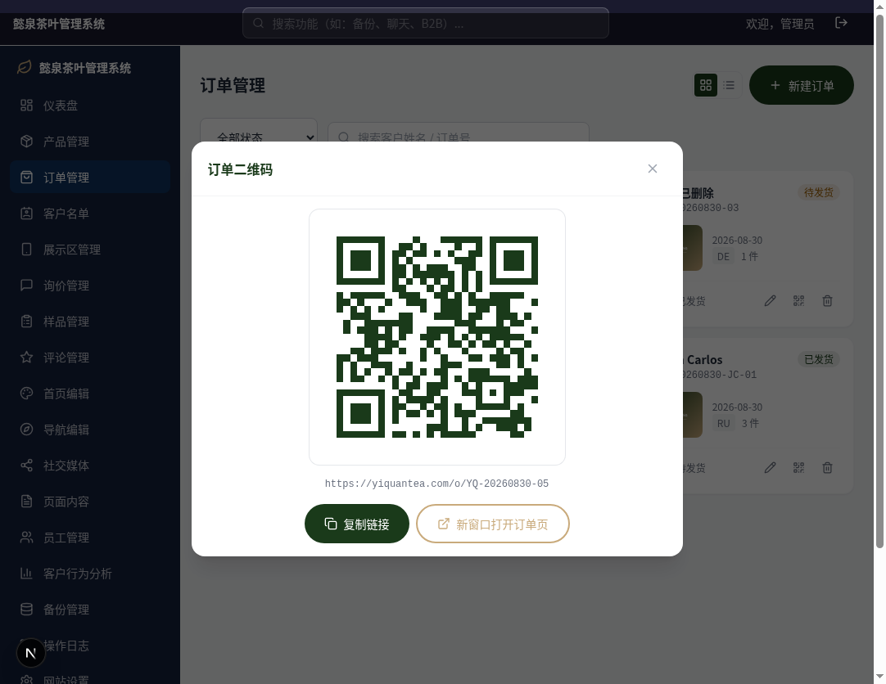
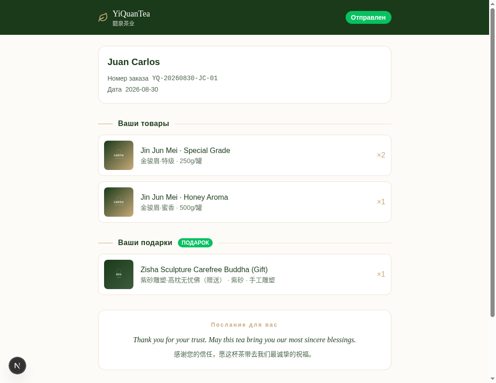
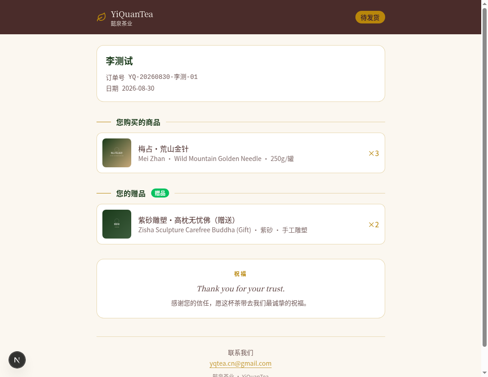

懿泉茶业 YiQuanTea.com ｜ 图文版 ｜ 零基础也能学会
一句话说：你在后台给客户建一张"订单"，把订单链接（或二维码）通过微信发给客户，客户点开就能看到自己买了什么茶、有什么赠品。
客户不需要下载任何东西，也不用登录，点开链接就能看。订单页支持中文、英文、俄语、德语、西语、法语六种语言，手机上打开也好看。
在浏览器地址栏输入：yiquantea.com/admin 然后按回车。看到下面这个绿色叶子图标的登录页就对了。

账号和密码由管理员发给你（每人一个）。密码不要告诉别人。
建订单前先建客户。建过一次的客户，下次直接选就行，不用重复填。
就是侧边栏里带"人像"图标的那一项，在「订单管理」下面。
姓名（必填，客户叫什么就填什么，外文名也行）；国家（选填，如 Colombia）；默认语言（重要！客户看订单用什么语言就选什么，比如俄罗斯客户选 Русский）。
以后建这个客户的订单时，选他的名字，语言会自动带出来，不用每次再选。

会弹出一个大窗口，跟着下面一步步填。

在「客户」下拉框里点客户的名字。选完语言会自动跟着变（比如选了俄罗斯客户，语言自动变俄语），想改也可以手动改。
订单号留空就行，系统会自动生成（格式像 YQ-20260830-JC-01）。日期默认今天，要改就点日期框选。
弹出商品图库 → 可以按分类筛选、按名字搜索 → 看到要的商品，点它一下就加进订单了。加完点「完成」或直接关窗口。

一样的操作。赠品（比如紫砂雕塑、包装罐）虽然不在官网展示，但这里照样能选到。
每件商品右边有个数字框，默认是 1，买几件就改成几。不要的商品点右边的 🗑 垃圾桶图标删掉。

默认「主站品牌色」（深绿+暖金）就很好看；想换复古风可以选「深咖暖色」。每个订单可以不一样。
外文和中文各一条，默认是"感谢您的信任，愿这杯茶带去我们最诚挚的祝福。"不改也行。
看到绿色提示"订单已创建：YQ-xxxx"就成功了，订单链接立刻生效。
每张订单卡片右下角有三个小图标：✏️ 编辑、▦ 二维码、🗑 删除。点中间那个。
看到提示"链接已复制"，打开微信 → 找到客户聊天窗口 → 粘贴 → 发送。客户点开就能看。
白底绿码，留白充足。
电脑上按 Win + Shift + S（苹果电脑按 Command + Shift + 4）框选二维码截图，粘贴到微信发送。客户用微信扫一扫即可。

下面就是客户手机/电脑上看到的真实效果（俄语订单 + 默认主题）：

换成中文订单 + 深咖主题是这样的：

客户点订单里的任何一件商品，会跳到商品详情页看大图和介绍（从订单进去的页面默认不显示价格和询价按钮，干净清爽）。
一下就好。订单状态立刻从"待发货"变成"已发货"，客户那边打开链接也能同步看到新状态。
点订单卡片上的 ✏️ 铅笔图标 → 改完点「保存修改」。加商品、改数量、换语言、换主题都行。
点 🗑 垃圾桶图标 → 弹出确认框 → 点「确认删除」。删了就没了，想清楚再删。
订单多了用顶部工具：搜索框输客户名字或订单号；状态下拉可以只看"待发货"或"已发货"。右上角还能切换卡片/列表两种看法。
以后有新茶要卖：找管理员在「产品管理」里加商品、传图片。加好后，建订单时「从图库添加」里立刻就能选到，不用改任何代码。
先自己点一下试试。如果你能打开、客户打不开，多半是客户网络问题；如果链接被截断了（微信里复制不完整），重新复制一次完整的发过去。链接格式是 https://yiquantea.com/o/订单号。
不用重建订单：编辑订单 → 改「订单语言」→ 保存。客户刷新页面就是新语言。
能。改了保存后，客户那边刷新就能看到最新内容（商品、数量、状态都是实时的）。
在。订单保留，只是订单页上客户名字的位置显示"客户已删除"。所以删客户前看一眼他有没有订单。
老订单保留，那件商品会显示"商品已下架"占位，不影响其他商品。所以删商品要谨慎。
这是故意的。这类商品设置了"不在官网前台显示"，只用于订单里。客户在官网看不到，但你建订单时照样能选。
锁定等 15 分钟自动解开。密码忘了找管理员，在「员工管理」里给你重置一个新密码（至少 8 位）。
不会。订单页设置了"禁止搜索引擎收录"，只有拿到链接的人才能看。
| 下拉框里显示的 | 是什么语言 | 适合哪国客户 |
|---|---|---|
| 中文（zh） | 中文 | 中国、新加坡等 |
| English（en） | 英语 | 美国、英国等，默认语言 |
| Русский（ru） | 俄语 | 俄罗斯、中亚 |
| Deutsch（de） | 德语 | 德国、奥地利 |
| Español（es） | 西班牙语 | 西班牙、哥伦比亚等拉美国家 |
| Français（fr） | 法语 | 法国、西非法语区 |
| 主题名 | 颜色 | 什么时候用 |
|---|---|---|
| 主站品牌色（默认） | 深绿 + 暖金 + 奶油白 | 绝大多数订单，和官网一个风格 |
| 深咖暖色 | 深咖 + 金 + 米白 | 想要复古、暖色调感觉时 |
| 状态 | 意思 | 客户页面显示 |
|---|---|---|
| 待发货 | 货还没发 | 金色徽标"待发货" |
| 已发货 | 货已发出 | 绿色徽标"已发货" |
🎉 看到这里你就全会了！
核心就四步：建客户 → 建订单 → 复制链接 → 微信发给客户。
遇到问题先看 FAQ，还不行就找管理员。
懿泉茶业 · 订单管理系统 ｜ 员工操作说明 v1.0